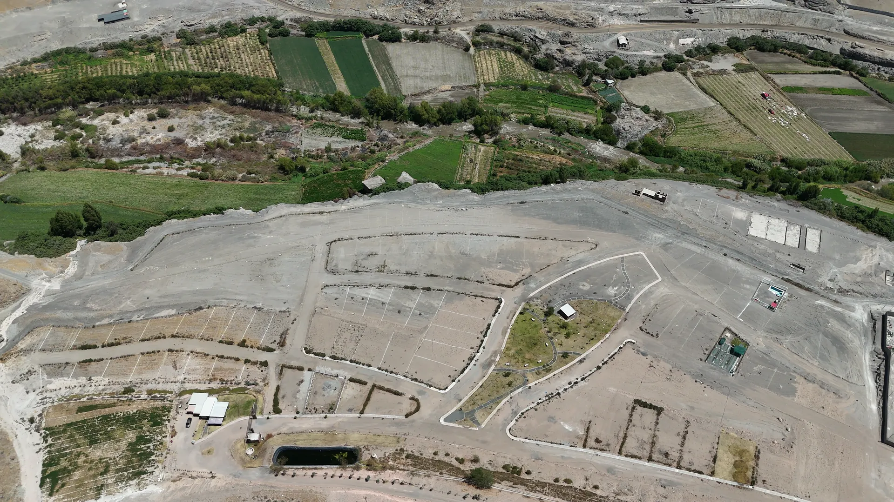
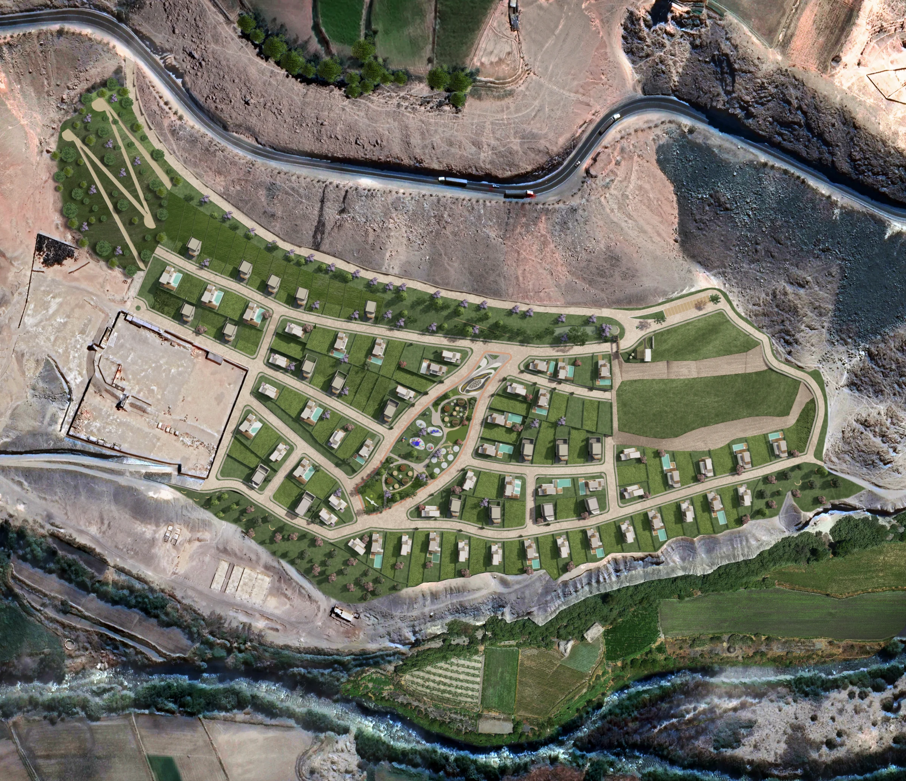
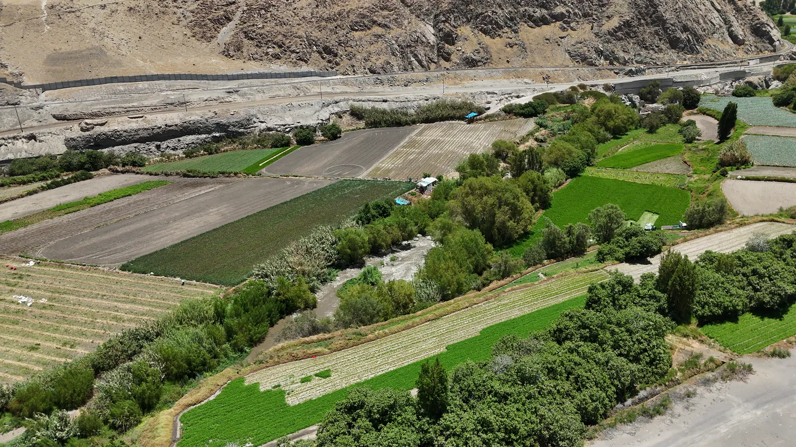
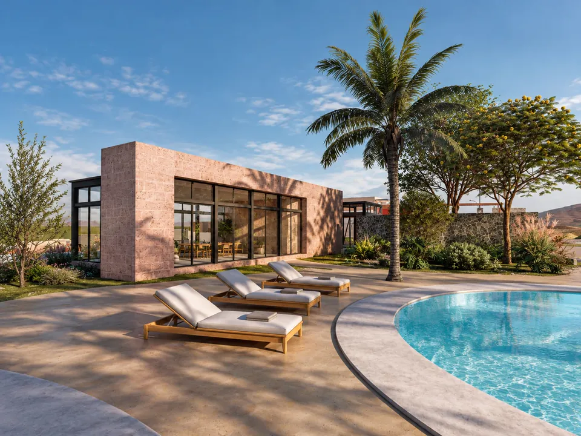
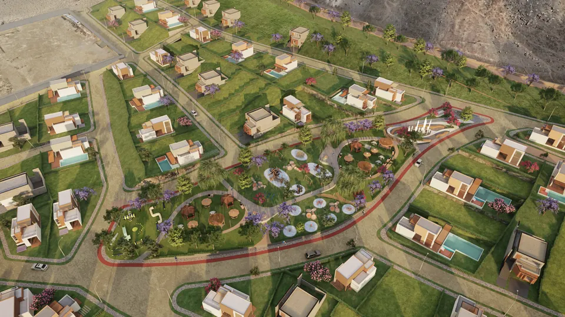
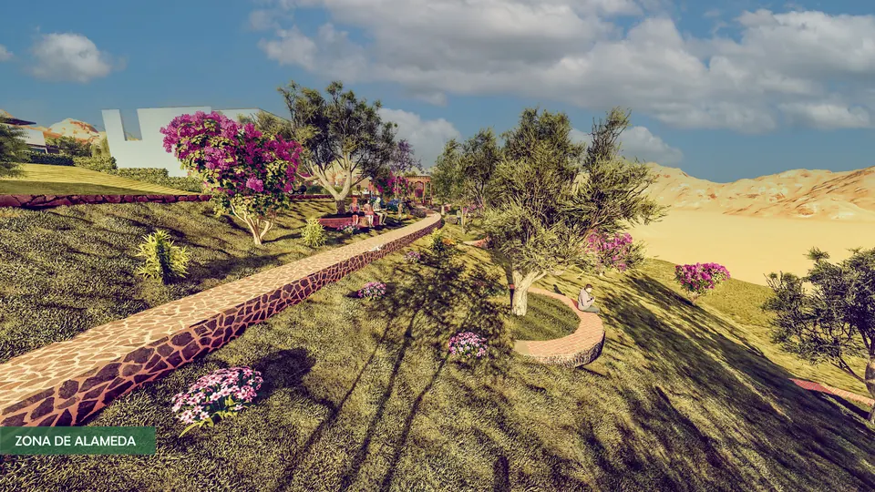

Veredas y parque
El terreno cuenta con veredas, parque y un punto de reunión.

Descubre la propuesta y conoce cómo luce el terreno hoy.


Los renders representan el desarrollo proyectado y no acreditan obras ejecutadas.
Ver plano y referenciasElige una manzana y explora sus lotes. Después, conócelos en persona.
Conoce los avances del parque y cómo se proyectan los espacios comunes.

Imagen referencial Club Alegra Piscina y espacios de encuentro previstos.La propuesta del club contempla piscina y áreas sociales. Consulta con un asesor el alcance de las instalaciones proyectadas.
Ver en el plano
Render referencial Parque central El parque y el punto de reunión ya existen.El diseño referencial muestra cómo podría ampliarse el parque con juegos y áreas de descanso.
Ver en el plano
Render referencial Senderos y alameda Paseos y zonas de descanso previstos.La propuesta contempla arborización, recorridos peatonales y una zona de trekking.
La Morada es una propuesta de habilitación urbana residencial en Uchumayo. Explora cómo se organiza y consulta las condiciones del lote que te interesa.
El terreno cuenta con veredas, parque y un punto de reunión.
El ingreso cuenta con pórtico, caseta de seguridad y cámaras.
Actualmente hay un punto de agua y un punto de luz en el proyecto. Las redes para los lotes siguen previstas.
La habilitación urbana forma parte del desarrollo previsto. Consulta el estado actual del trámite.
La entrega del título individual se contempla para una etapa posterior, sujeta a la independización del lote y a los trámites correspondientes.
El proyecto contempla redes de agua, desagüe y energía eléctrica. Consulta el alcance y las etapas previstas para su implementación.
Elige un lote en el explorador y selecciona soles o dólares. Son dos precios publicados por el propietario, sin conversión de moneda.
Sí. Envía tu solicitud y un asesor coordinará contigo la fecha y la hora de la visita.
Consulta los planes disponibles para el lote que te interesa. Un asesor te confirmará la inicial, las cuotas y las condiciones vigentes.
Registra tu interés. Un asesor debe confirmar la disponibilidad y las condiciones para formalizarla; la solicitud no reserva automáticamente el lote.
Solicita la documentación vigente, la situación registral, las obras y plazos previstos, y las condiciones de pago y devolución. Los renders y las casas del modelo son referenciales.
La habilitación urbana, las obras y la independización de los lotes forman parte del desarrollo proyectado. Solicita la documentación y las condiciones vigentes antes de contratar.